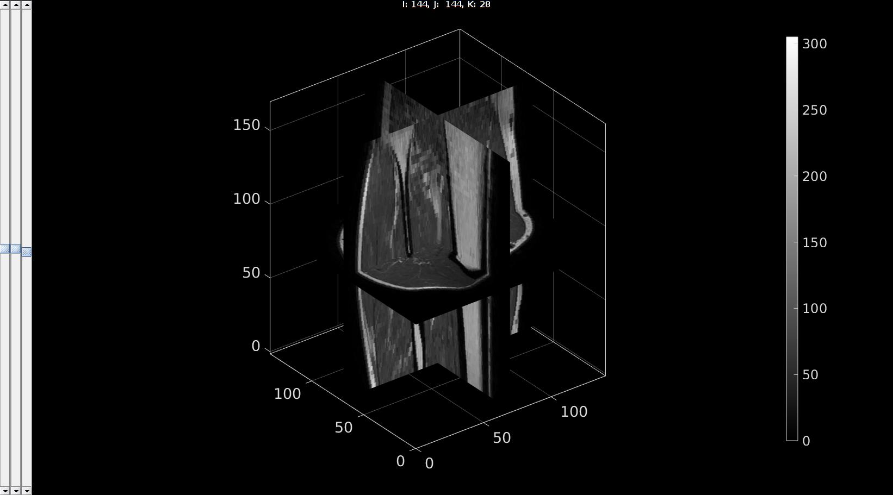

dcmFolder2MATobject
Below is a demonstration of the features of the dcmFolder2MATobject function
Contents
Syntax
dcmFolder2MATobject(PathName,MaxVarSize);
Description
The dcmFolder2MATobject function converts DICOM data to a MATLAB mat (object and or) file.
Examples
clear; close all; clc;
Example: CONVERTING DICOM IMAGE DATA TO A MAT OBJECT
Below some example code is shown to convert all DICOM files inside a folder (including its subfolders) to the IMDAT format. The function dcmFolder2MATobject converts the DICOM data to a matlab MAT object and saves it under the name IMDAT.mat inside a subfolder called IMDAT. A waitbar appears showing the process of the data conversion for the DICOM information and image data. Multiple types of image data (e.g. phase, real, imaginary, magnitude data) is stored seperately. Also several DICOM info fields are harvested and stored.
The IMDAT.mat object contains the following:
IMDAT_struct =
G: [1x1 struct] %The geometry parameters
ImageSize: [128 128 17 20] % The image size
ImageTypesUni: {'ORIGINAL\PRIMARY\M_FFE\M\FFE'} % The image type or types
type_1: [4-D uint16] % The image data matrix
type_1_info: [1x340 struct] % The harvested DICOM informationThe geometry set G contains: G =
v: [3x1 double] %The voxel size
OR: [3x1 double] %The location of the origin
r: [3x1 double] %Direction vector for rows
c: [3x1 double] %Direction vector for ColumnsThe full input set is used like this: dcmFolder2MATobject(PathName,MaxVarSize,reOrderOpt,dicomDictFactory,fileExtension)
The first input is required (the path name for the DICOM data folder), all other inputs are optional.
PathName: The path name to the folder containing the DICOM data
MaxVarSize: default=>1e12, the maximum variable size. If the image data exceeds this size e.g. as a 4D array, each 3D subarray is seperately saved
reOrderOpt: default=>0, if 1 the files are sorted based on the "InstanceNumber" DICOM field, instead of the file names.
dicomDictFactory: default=>0, If zero the best dicom dictionary is selected based on the DICOM file vendor description. If 1 then the MATLAB "factory default" is used.
fileExtension: default=>'.dcm', specifies the file extension for the DICOM files. The default is the typical .dcm extension. Alternatively an empty file extension '' or [] may be specified. In which case all files without an extension contained in the DICOM folder are deemed DICOM files.
Path name for dicom files
defaultFolder = fileparts(fileparts(mfilename('fullpath'))); %Set main folder pathName=fullfile(defaultFolder,'data','DICOM','0001_human_calf');
Example: Convert all DICOM data in a folder to a mat-object
Converting dicom data to the IMDAT format
dcmFolder2MATobject(pathName);%Get DICOM data
Detected Philips Healthcare files DICOM dictionary set to: gibbon_dict.txt
Loading in the entire data structure
loadName=fullfile(pathName,'IMDAT','IMDAT.mat'); IMDAT_struct=load(loadName); M=IMDAT_struct.type_1; %The image data (note: may not be of the double class) v=IMDAT_struct.G.v; %The voxel size
Viewing the image data
sv3(M,v);
Alternative using mat-object indexing. Indexing into the MAT object to avoid loading entire structure In somecases it is not desirable to load in the entire data set but only say a certain slice. In this case the MAT object allows for indexing as shows below. See also the help documentation for matfile Although this type of indexing can be slow it does allow one to only select a subset of the data which in some cases helps to save memory
% Load "link"/"handle" to mat-object matObj = matfile(loadName); % Retrieve components from matobject G = matObj.G; %Geometry information v=G.v; %Voxel size m=matObj.type_1(:,:,5:10); %Only the 5th up to 10th slice M= matObj.type_1; %The entire image for type_1
Example: Convert all DICOM data in a folder with additional options
MaxVarSize=[]; %Maximum variable size reOrderOpt=[]; %Option to reorder slices based on the "InstanceNumber" DICOM field dicomDictFactory=0; %Force to use factory default DICOM dictionary fileExtension='.dcm'; %File extension for DICOM files, can also be empty %Additional options are provided in an option structure optionStruct.nDownSample=[3 3 3]; %Under sample the image by these factors in row, column, slice directions optionStruct.skipInfo=1; %If 1 loading all DICOM info is skipped. Only the information from the first slice is used
|dcmFolder2MATobject(pathName,MaxVarSize,reOrderOpt,dicomDictFactory,fileExtension,optionStruct);%Get DICOM data |
Viewing the image data using ind2patch Alternatively the image data can be viewed using the ind2patch function. See the associated help for more information.

GIBBON www.gibboncode.org
Kevin Mattheus Moerman, gibbon.toolbox@gmail.com
GIBBON footer text
License: https://github.com/gibbonCode/GIBBON/blob/master/LICENSE
GIBBON: The Geometry and Image-based Bioengineering add-On. A toolbox for image segmentation, image-based modeling, meshing, and finite element analysis.
Copyright (C) 2006-2023 Kevin Mattheus Moerman and the GIBBON contributors
This program is free software: you can redistribute it and/or modify it under the terms of the GNU General Public License as published by the Free Software Foundation, either version 3 of the License, or (at your option) any later version.
This program is distributed in the hope that it will be useful, but WITHOUT ANY WARRANTY; without even the implied warranty of MERCHANTABILITY or FITNESS FOR A PARTICULAR PURPOSE. See the GNU General Public License for more details.
You should have received a copy of the GNU General Public License along with this program. If not, see http://www.gnu.org/licenses/.